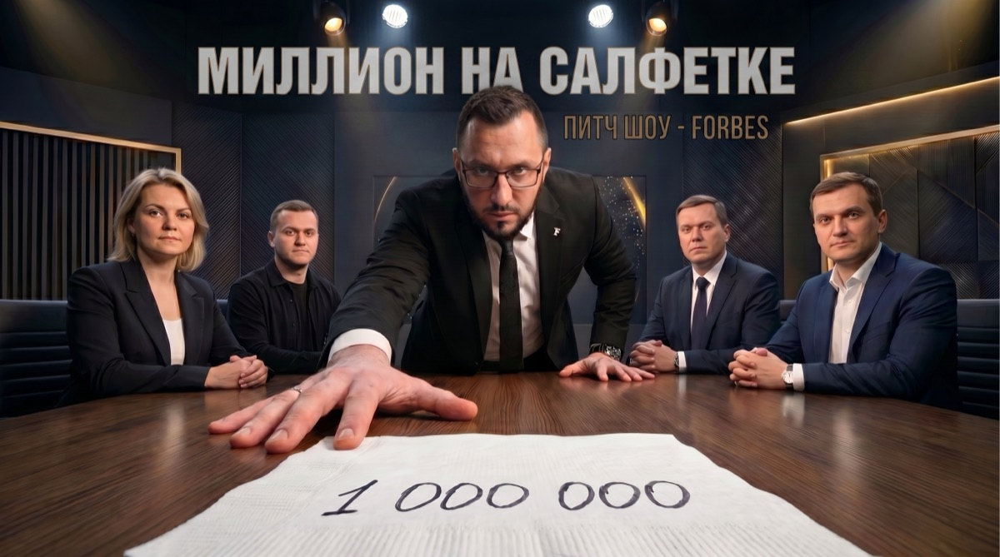
Питч-шоу Forbes · Владивосток · 2026
Питч-шоу Forbes для тех, у кого есть идея и смелость её назвать. Каждый выпуск — новый город, три участника из региона: предприниматели, стартаперы, учёные. Один шанс перед советом Forbes. Инвестиции реальные. Отказ тоже.
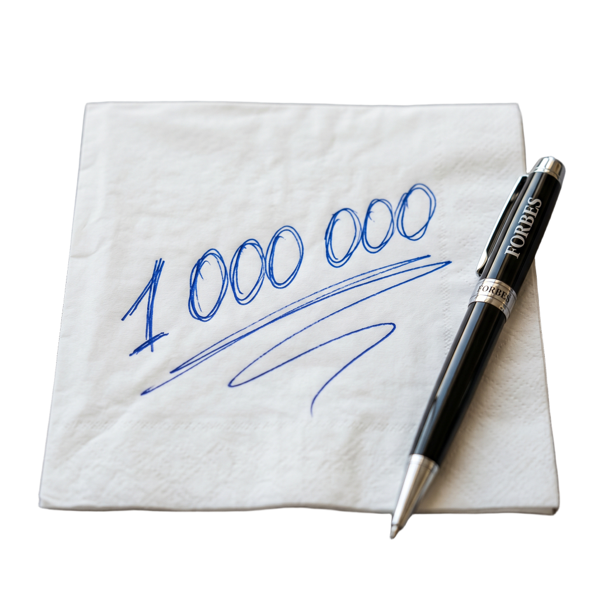
Идея меняет всё
Не в офисе. Не в PowerPoint. За столиком в баре, в аэропорту, на студенческой лекции. Одна идея — и всё изменилось.
Короткий формат
До большого шоу Forbes объявляет кастинг. Предприниматели из регионов снимают 60-секундную видео-заявку по простой структуре, публикуют у себя с хэштегом и отмечают Forbes. Лучшие заявки выходят в аккаунте Forbes — это и есть первый шанс попасть на шоу.
Формат шоу
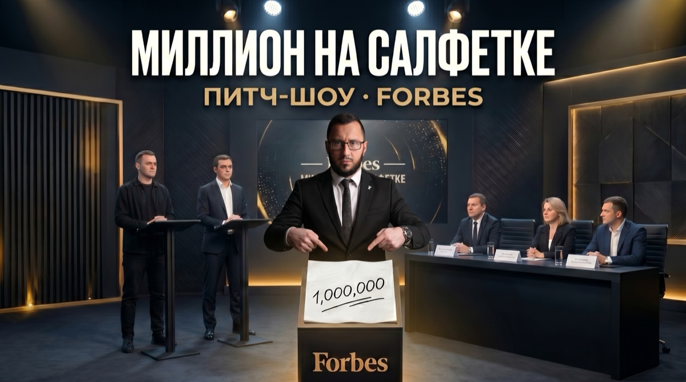
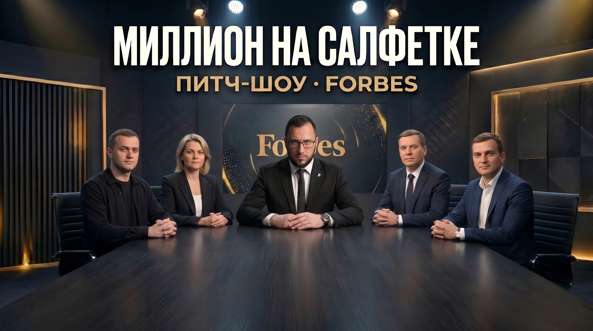
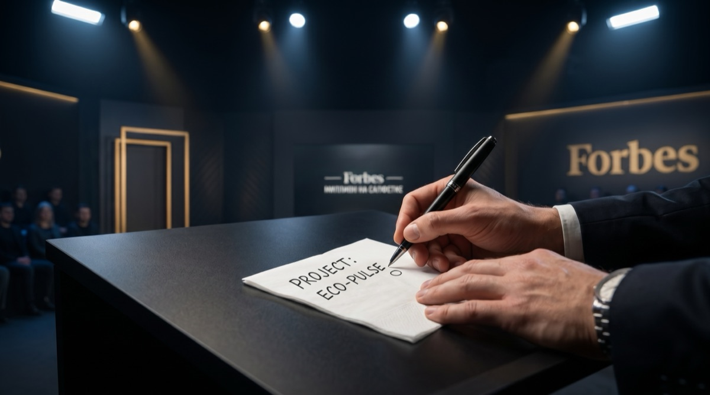
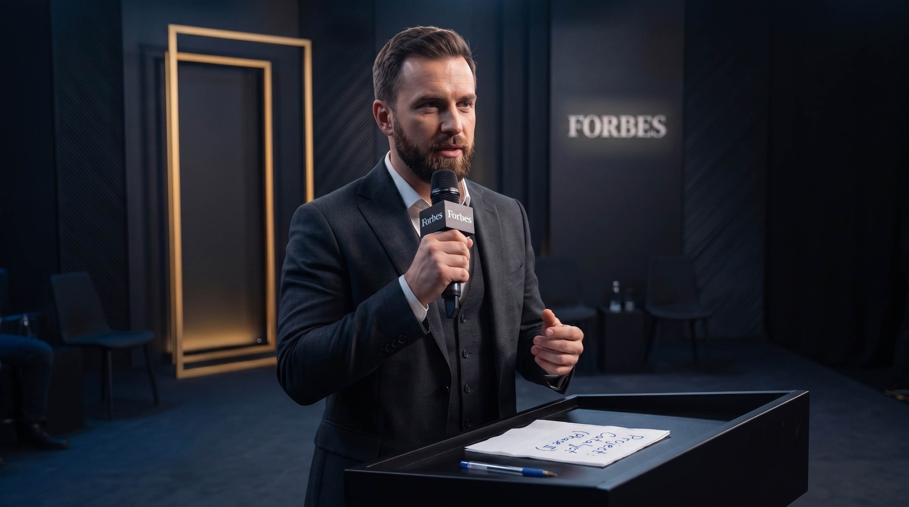
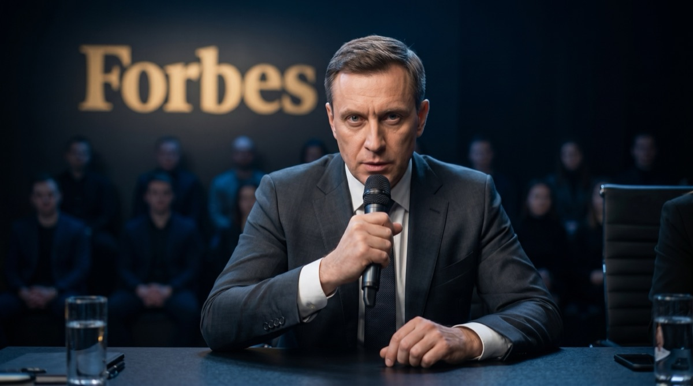
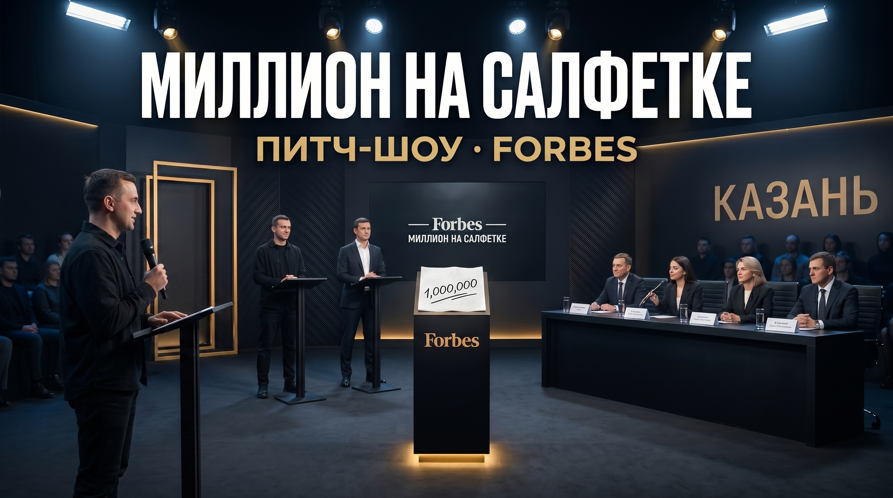
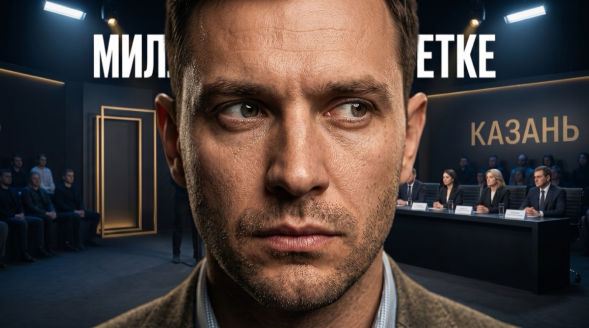
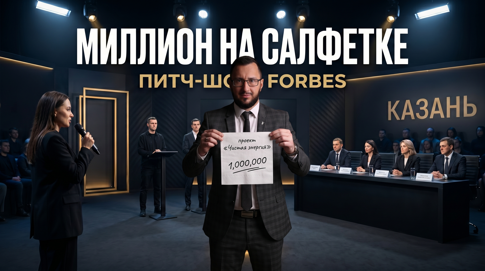
Каждый питч — отдельная история с непредсказуемым исходом. Инвесторы торгуются, соперничают друг с другом. Предприниматель может уйти ни с чем.
Предприниматель получает чистую салфетку
Пишет название своего проекта на салфетке
Питчит перед советом Forbes
Кладёт свою салфетку на стол совета Forbes
Крупный план: салфетка победителя с суммой
«Простая идея → переговоры → рука пишет сумму на салфетке»
Shark Tank — один из самых успешных форматов бизнес-реалити в мире. «Миллион на салфетке» строится на той же механике, адаптированной под Forbes и российский контекст.
Но у нас есть то, чего нет у Shark Tank: визуальный хук — салфетка. Рука пишет сумму прямо сейчас, прямо в кадре. Один кадр — и всё понятно без слов. Это сильнее любой сделки на словах. Салфетка даёт шоу мгновенную узнаваемость — зритель запоминает её с первых секунд и возвращается снова.
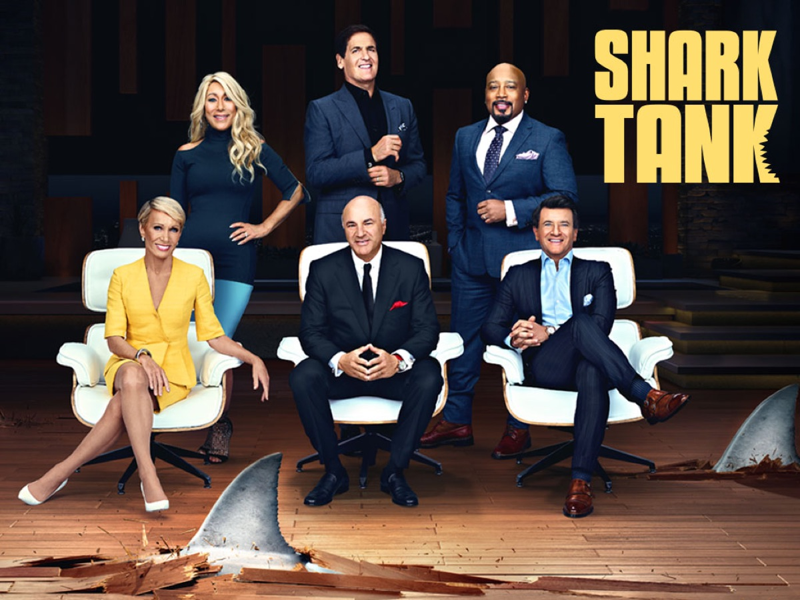
Четыре человека принимают коллегиальное решение. Forbes выступает распорядителем фонда — не инвестирует сам, но отбирает и решает. Инвестиции реальные, от 1 000 000 рублей.
Критерии отбора: интересная история, нестандартная идея, реальные цифры. Фокус пилота — Владивосток.
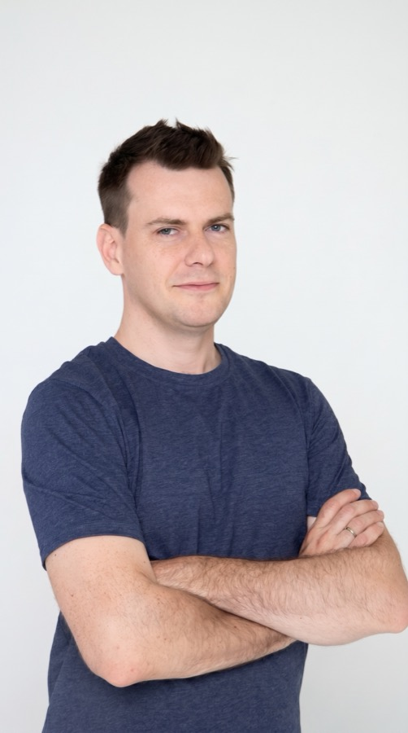
AI-платформа для создания голосовых роботов для бизнеса. Основана во Владивостоке в 2019 году. В 2021 привлекли раунд 50 млн руб. при оценке 450 млн руб. Выручка 2025 — 97 млн руб. Гранд 2 млн руб. от Минэкономразвития Приморского края.
История из регионального стартапа в федеральный B2B AI-рынок. Уже прошли институциональную проверку инвесторами — нужен следующий раунд для масштабирования.
Источник: VC.ru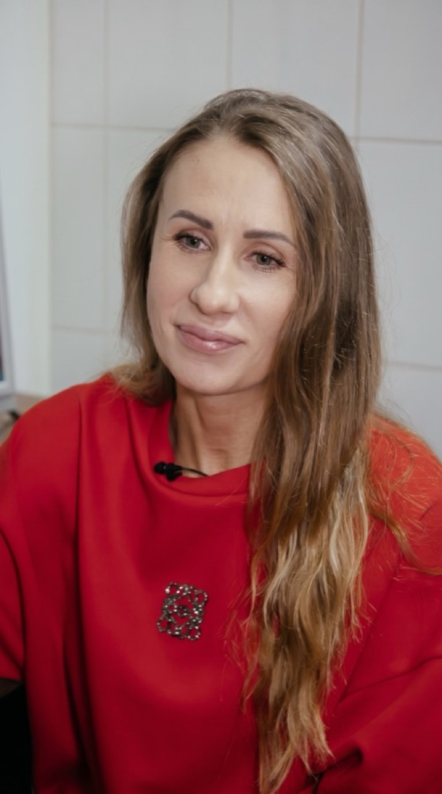
Производство тофу с дальневосточными ингредиентами: черемша, папоротник, морские овощи. Основана в 2017 году на личные сбережения 1 млн руб. — с домашней кухни до производства 100 кв. м. 5 000 упаковок тофу в месяц, дистрибуция в 150 магазинах Приморья и Хабаровского края.
Нишевый продукт с уникальным ДВ-позиционированием, которого нет на федеральном рынке. Инвестиции нужны для выхода за пределы Дальнего Востока.
Источник: Biz360 (Т-Журнал)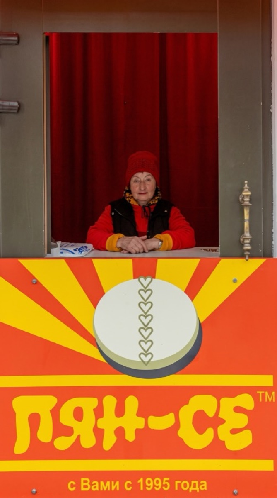
Возродил уличный стрит-фуд Владивостока — пян-се (корейские пирожки на пару). Первая точка на ул. Снеговой создаёт пробки из очередей. Пян-се — культурный код города, блюдо, которое знает каждый житель Приморья.
Понятный продукт с сильной локальной идентичностью. Потенциал масштабирования сети уличного фуда по городам ДФО и за его пределами.
Источник: КП Владивосток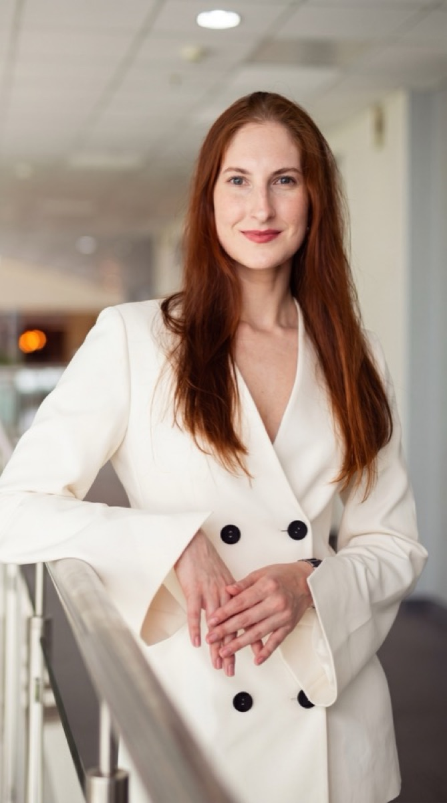
Основала союз 13 НКО Приморского края с оборотом 17–20 млн руб./год. Проект сбора и redistribution одежды: 8+ тонн в месяц, 800+ человек в помощь ежемесячно. Два благотворительных магазина Prosto Charity Store во Владивостоке и Партизанске. Forbes 30 Under 30 — 2023.
Масштабируемая социальная модель с верифицированными цифрами. Инвестиции нужны для запуска сети по городам ДФО. Уже признана Forbes — история с готовым доверием аудитории.
Источник: Forbes Russia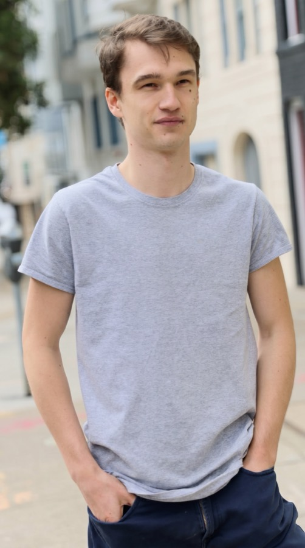
Маркетплейс no-code разработчиков для стартапов и корпораций. Основал в 20 лет прямо с Сахалина. Seed-раунд $1 млн от Николая Давыдова (Davidovs VC), братьев Либерман (экс-топы Snap) и Синди Би (CapitalX). Forbes 30 Under 30 — 2022.
История про то, что география — не ограничение. Глобальный стартап, собравший международных инвесторов, из самого дальнего региона страны.
Источник: Forbes Russia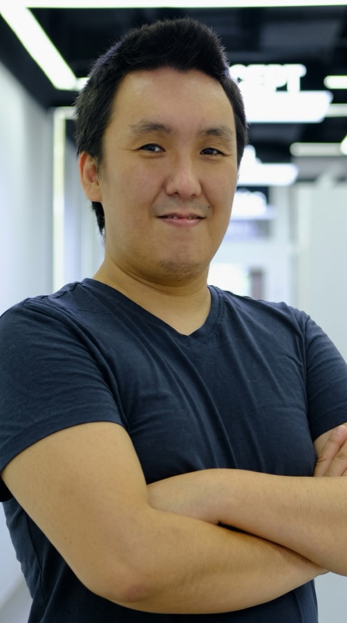
Медицинский AI для анализа КТ-снимков: COVID-19, рак лёгких, ишемический инсульт. Продукты развёрнуты в реальных больницах Якутска. Разработка ведётся в Якутске с командой из местных специалистов.
Deeptech из Якутии с реальными клиентами — больницами. Потенциал масштабирования на федеральный рынок медицины и экспорт. История учёного, который строит бизнес, а не только публикует статьи.
Источник: ЯSIA / Технопарк ЯкутияНезависимая кинокомпания, основана в 2011 году в Якутии. Один из ключевых игроков якутского кино — феномена, который вошёл в топ-3 регионального кино России. Якутские фильмы попадают на международные фестивали и бьют локальные кассовые рекорды.
Создала индустрию с нуля в регионе, где её не было. Нестандартная история культурного предпринимателя — инвестиции нужны для масштабирования производства и дистрибуции за пределы ДФО.
Источник: ВедомостиAR-книги для детей из Якутии. Первая книга — 7 000 проданных копий. В 2020 году принята в канадский акселератор Invest Ottawa, вышла в финал. До этого — выставка в Шанхае и акселератор Б8 Якутия. Edtech с международным признанием.
История про то, как детский edtech из Якутии получает канадских партнёров и выходит на глобальный рынок. Инвестиции нужны для масштабирования производства и дистрибуции.
Источник: VC.ru / Технопарк ЯкутияМорская ферма в бухте Витязь (260 км от Владивостока): 120 га акватории, выращивает морских гребешков и трепанга. Начал с нуля в 2019 году. История предпринимателя, который ушёл в море — буквально.
Аквакультура — одна из немногих отраслей, где у Дальнего Востока природное преимущество. Инвестиции нужны для масштабирования фермы и выхода на рынки Китая и Японии.
Источник: Lenta.ru15 купольных модулей по 29 м² в посёлке Южно-Морской, работает круглый год. Инвестиции — более 115 млн рублей. Резидент Свободного порта Владивосток. Открытие — сентябрь 2024.
Туристический поток на ДВ растёт — инфраструктуры не хватает. «Атмосфера» уже работает с подтверждёнными цифрами. Нужны инвестиции для второй очереди и масштабирования модели.
Источник: КРДВРазрабатывает «умные сайты» на основе ИИ — анализируют поведение аудитории и адаптируются под неё. Резидент Технопарка «Русский» при ДВФУ на острове Русский. Победитель конкурса Skolkovo Startup Exp.
ИИ-продукт с реальными клиентами из технологического кластера ДВФУ. История: университет → стартап → федеральное признание.
Источник: ДВФУ2 га в Шкотовском районе Приморья по программе «Дальневосточный гектар»: 10 купольных домов и 6 всесезонных. История про то, как один гектар превратился в работающий туристический бизнес.
Доказательство модели: «Дальневосточный гектар» как стартовый капитал для туризма. Инвестиции нужны для расширения и продвижения на федеральном уровне.
Источник: EastRussiaТри питча, совещание, объявление решений. Полный нарратив с эмоцией ожидания. Флагманский формат шоу — здесь живёт драма.
Один момент — один питч — один драматический исход. Нарезки лучших моментов: ритуал салфетки, острые вопросы, рука пишет сумму, лицо победителя.
Оборудование
Петличные микрофоны — минимум 6 шт (4 совет + 3 героя) · 2 камеры (основная + вторая) · Свет — 2–3 прибора (аренда во Владивостоке)